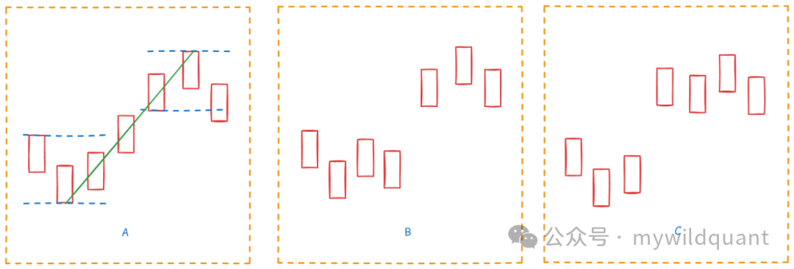
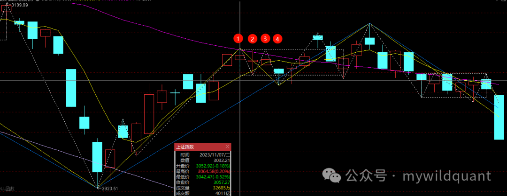
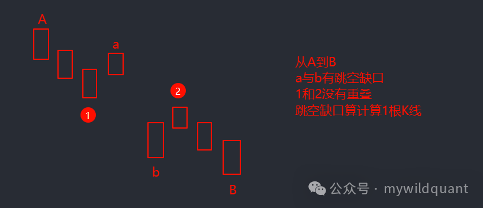
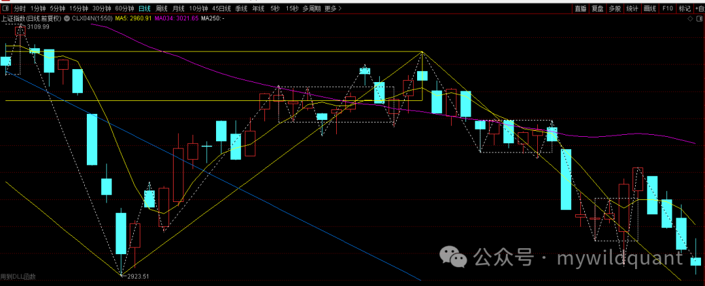
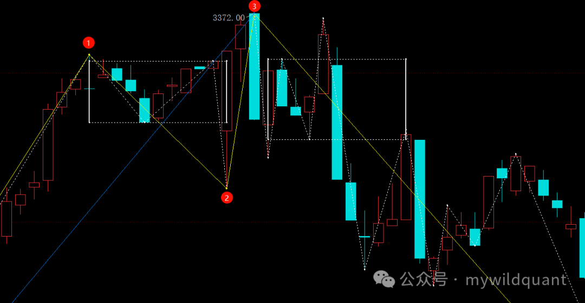
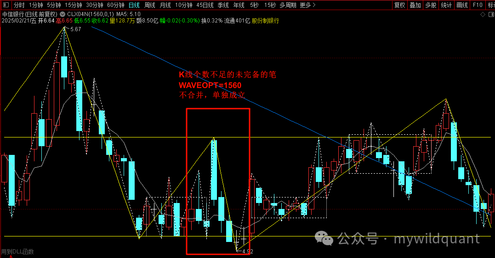
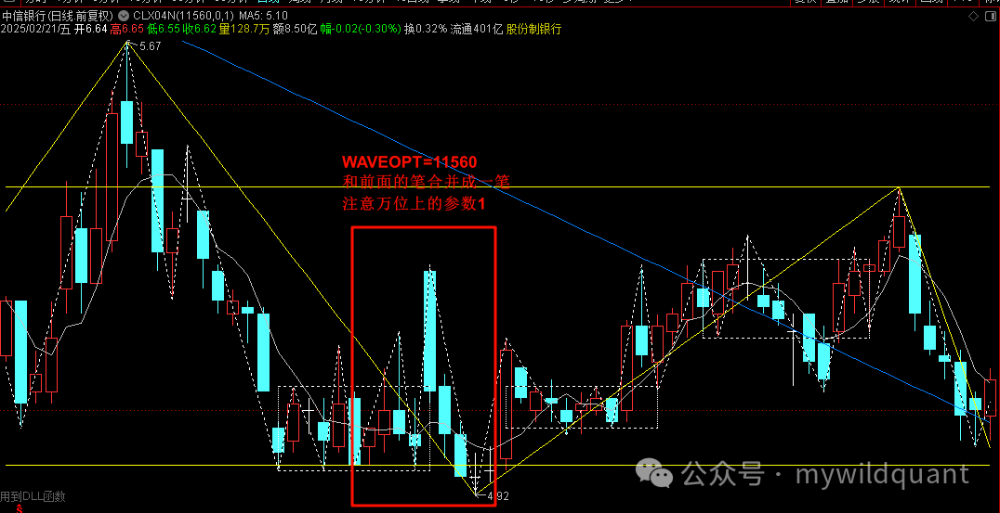
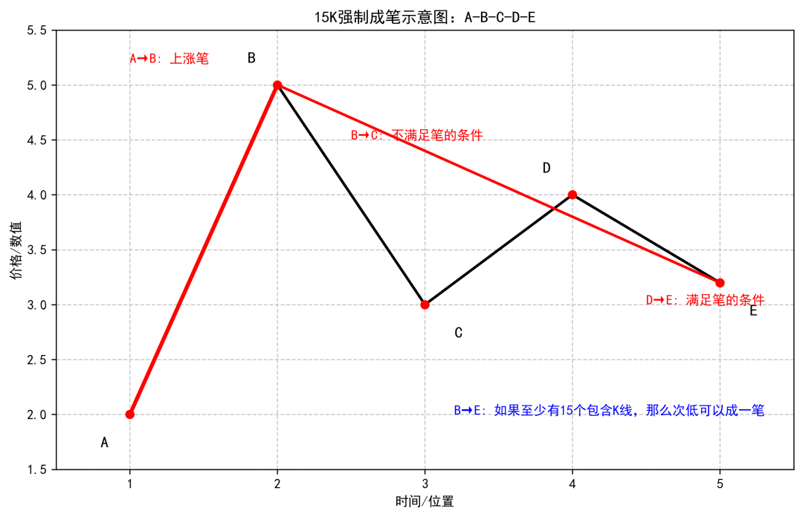
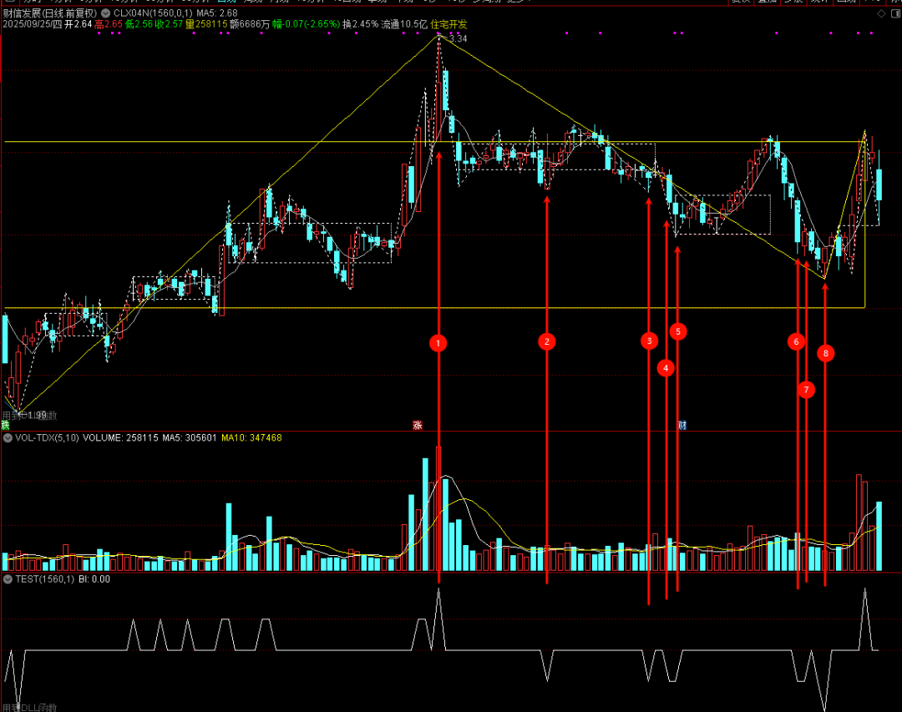

笔：成笔规则与模式参数¶
适用范围：本文描述 fqchan04 内核的划分实现。fqchan01 有独立的包含与分型文档，fqchan05（均线笔、子浪）与 fqchan06（极简分笔）的实现差异见各自插件文档。
笔是缠论体系的第一级构件：线段由笔组成，中枢由笔界定，买卖点由笔推导。笔划对了，后面的一切才成立。但笔恰恰是争议最大的部分——不同人对同一段走势画出的笔经常不一样，即所谓「千人千缠」。本章讲清楚番茄缠论（fqchan04）如何把「成笔」变成一套可复现的算法规则，以及这些规则如何通过参数对外开放。
本章的输入是《K线预处理：包含关系与分型》的产物：经过包含关系处理后的标准化 K 线序列（StdBar），以及在其上识别出的顶分型、底分型。预处理细节不再重复。
笔的定义与标准笔¶
缠师原文的定义：一笔由相邻的顶分型和底分型连接而成，方向上顶底交替。落实到可编程的判定，核心约束是 K 线数量——包含关系处理后，从顶分型的高点 K 线到底分型的低点 K 线之间（含两端）的合并 K 线数要达到 5 根。这是番茄缠论成笔计数的基准口径，后文所有 K 线数约束均指合并后的 K 线（StdBar），不是原始 K 线。
围绕这个定义，实践中存在两类笔的划分流派：
| 流派 | 划法 | 特点 |
|---|---|---|
| 简笔 | 分型端点直接连线 | 宽松，适合日线等大周期 |
| 标准笔 | 顶底分型满足结合律与 K 线数约束 | 严格，程序化实现的首选 |
番茄缠论走标准笔路线，但在标准之上做了工程化改造：允许不满足 K 线数要求的非完备笔存在（见下文），并通过参数控制严格程度。这种「最大可能满足标准，但不执拗于标准」的取舍，是它区别于教科书实现的关键。
成笔规则：从分型到笔¶
一笔的成立需要同时满足以下条件：
- 顶底交替：相邻两笔的方向必须相反，笔的端点一顶一底依次连接。
- 端点即极值：笔的顶点是这段走势的最高点，笔的底点是最低点。这个原则贯穿番茄缠论全部划笔逻辑，非完备笔、强制成笔的端点选择都服从它。
- K 线数约束：顶分型高点 K 线到底分型低点 K 线之间的合并 K 线数达标——模式 5 要求 5 根，模式 4 放宽到 4 根，模式 6 在 5 根之上追加几何约束。
- 分型间隔约束（模式 6）：顶分型与底分型的分型区间不能重叠，且顶底之间的独立 K 线不能「躲」在分型区间里面。分型区间指分型的左 K 与中间 K 构成的区间。

上图中，在模式 6 的约束下只有 A 图可以成笔，B 图（分型区间重叠）和 C 图（独立 K 线躲进分型区间）都不能成笔。
K 线数的缺口计数¶
K 线数约束中有一个容易踩坑的细节：满足特定条件的跳空缺口可以计为 1 根 K 线。这是刻意设计——缺口意味着价格跳过了一段区间，其信息量近似于一根 K 线。判定规则见下节。
缺口情形的划笔处理¶
早期版本的处理很简单：顶底之间存在缺口就计 1 根 K 线。这会画出「小气」的笔——一个很小的缺口就让 4 根 K 线凑够了 5 根的计数，划分出一笔略显勉强：

上图中参数为 1550（5 根 K 线成笔），1 号到 4 号只有 4 根 K 线，但因为 3 号与 4 号之间存在缺口，缺口计 1 根后凑满 5 根而成笔。从直觉上这种划分并不妥当。
现在的算法给出了完整的通用判定。设 A 是顶分型的高点 K 线，B 是底分型的低点 K 线，正在判断 A 到 B 是否成笔：
- 取 A 到 B 之间相邻的两根 K 线 a、b，且 a 与 b 之间存在缺口；
- 若 b 与「A 到 a」之间的任何 K 线都无重叠，且 a 与「b 到 B」之间的任何 K 线都无重叠，则该缺口计 1 根 K 线；
- 不满足上述条件的缺口（例如缺口一侧的 K 线与另一侧 K 线仍有价格接触）不参与计数。

经过这个调整，前述案例中 4 号 K 线与 2 号 K 线存在接触，缺口不再计数，K 线数不足 5 根，不再强行成笔：

一句话总结：只有「干净」的缺口才算 1 根 K 线——缺口两侧各自与对方区间完全无重叠，才认可它承载了一根 K 线的份量。
非完备笔：容错与合并¶
为什么允许非完备笔¶
按 5 根 K 线的严格标准，实际走势中总有一些「差一点」的候选笔。典型场景：

参数为 1550 时，图中 2 号到 3 号 K 线之间明显不足 5 根，却被划分为一笔。严格意义上它不是（完备）笔——在番茄缠论的术语里，它称为非完备笔（也称非标准笔）。
允许它存在的理由来自级别视角：
- 原文中笔是最低级别的构件，由笔递归推出线段、走势、高级别走势，高级别图上基本可以做到同级别划分。但很少有人真的做这种递归计算。
- 主流用法是选定一个周期，在该周期上划笔，再从笔推线段、推走势。这样的一笔必然对应某个低级别上的一个走势——而这些低级别走势并不是同级别的。
- 图中 2 到 3 的非完备笔，实际上是某个低级别上一个完整走势的投影：它在低级别上发生了「小转大」，没有能力完成当前级别的完备一笔。
所以笔的分类是两种：完备笔与非完备笔，划分结果中同时存在。由于同时遵循「端点即极值」原则，次高点、次低点只要构成极值转折，也会被承认为笔端点。想把所有笔划成严格同级别几乎不可能——总会有夭折的笔。
非完备笔的合并开关¶
一个典型触发场景：价格下跌跌破前面上升笔起点的低点。此时可以承认这是一个非完备笔（默认画法），也可以把它合并到前一个同向笔中，代价是前一个同向笔被拉长：


这个选择通过 WAVEOPT 参数的万位控制（详见下文参数体系）：1560 为默认不合并，11560 为合并。合并算法本身也经过迭代修正，旧版存在缺陷，后已订正。
强制成笔：15K 兜底与次高次低¶
为什么需要强制成笔¶
如果严格按成笔条件划分，某些走势会出现 K 线延伸很久仍不成笔的情况。笔中所包含的级别会不断长大——以日线为例，标准情况下 1 笔约对应一个 5 分钟级别的走势，笔拖得太久意味着级别扩展，破坏同级别交易的前提。强制成笔就是防过度延伸的兜底机制。
阈值定为 15 有一个简单的估算依据：1 分钟走势类型最少约 5 根 K 线，5 分钟级别则约 15 根。当合并 K 线累计达到阈值仍无新笔成立时，强制划分出一笔。
从最高最低点到次高次低¶
旧方案：达到阈值后，向上笔取区间最高 K 线、向下笔取最低 K 线强制成笔。这是一种倒推算法，产生两个问题：强制出来的笔可能连 5 根 K 线都没有（用户最常问的「这笔为什么不够 5 根」多源于此）；端点被钉死在极值上，划分生硬。
新方案（重新定义的 15K 强制成笔）：允许次低点/次高点成笔。此前把 B 到 C 强制成笔时（哪怕只有 2、3 根 K 线）的情形，改为允许在次低位置成笔：

次高次低成笔定位为兜底算法的一种，不是唯一算法——目前先实现这一类场景，后续分类会逐步补充，采用「每次迈一小步」的方式渐进演化。设计者明确不希望一笔中包含的级别过度增长，次高次低划分正是控制级别增长的手段。
笔模式与 WAVEOPT 参数体系¶
fqchan04 把成笔规则的全部可调项编码进一个参数：公式端叫 WAVEOPT（早期文档写作 OPTS），Python 端对应 ChanOptions。这是一个五位数字，各位含义如下：
| 数位 | 控制项 | 取值与含义 |
|---|---|---|
| 万位 | 非完备笔是否合并 | 0 = 不合并（默认）；1 = 合并到前一同向笔 |
| 千位、百位 | 强制成笔阈值 | 两位数表示合并 K 线数；≥15 生效，可配 15/16/17…；<15（如 14）即关闭强制成笔 |
| 十位 | 笔模式（严格程度） | 4 = 4 根 K 线成笔；5 = 5 根 K 线成笔；6 = 大笔模式；非 4/5/6 的值默认按 6 处理 |
| 个位 | 保留位 | 预留给分型控制，暂未启用 |
三种笔模式自宽到严：
| 模式 | 成笔条件 | 别名 |
|---|---|---|
| 模式 4 | 合并 K 线数 ≥ 4 | 最宽松 |
| 模式 5 | 合并 K 线数 ≥ 5，无附加几何约束 | 原版笔 |
| 模式 6 | 模式 5 条件 + 分型区间不重叠 + 独立 K 线不躲进分型区间 | LV 严格笔，俗称「大笔」 |
模式 6 之所以被叫作大笔：几何约束筛掉了大量顶底紧邻的候选，成笔更难，画出来的笔自然更长更大。默认参数 1560（模式 6 + 15K 强制成笔）就是作者日常主用的大笔模式。
模式 5 与模式 6 的实战区别，集中在一类图形上：顶分型与底分型发生重叠（或中间 K 线躲在分型中）的候选笔。同一走势，模式 6 判定不成笔、笔直接延伸到更远端点；切换到模式 5 后此处即成一笔。遇到「为什么这里不成笔/多出一笔」的疑问，先检查笔模式。
常用配置速查：
| WAVEOPT | 含义 |
|---|---|
| 1560 | 默认：模式 6 大笔 + 15K 强制成笔，不合并非完备笔 |
| 1550 | 模式 5 原版笔 + 15K 强制成笔 |
| 1460 | 模式 6 大笔，关闭强制成笔（14 < 15） |
| 11560 | 模式 6 + 15K 强制成笔 + 合并非完备笔 |
笔信号序列¶
插件端笔的输出不是端点坐标，而是一个与 K 线等长的信号序列，每个 K 线位置一个值：
| 信号值 | 含义 |
|---|---|
| 1 | 笔顶；同时是下跌笔的开始、上涨笔的结束 |
| -1 | 笔底；同时是上涨笔的开始、下跌笔的结束 |
| 0.5 | 上涨笔成立或延续（笔内每次创新高都标记 0.5） |
| -0.5 | 下跌笔成立或延续（笔内每次创新低都标记 -0.5） |
| -3 | 序列类型标记：笔信号序列中第一个 0 用 -3 代替，供程序识别这是笔序列 |
| 0 | 非笔信号位置 |
一支笔的完整信号过程：
- 上涨笔：从 -1（笔底）出发，笔初次成立处标记 0.5，此后每次创新高延续标记 0.5，最终在笔顶以 1 收束；
- 下跌笔：从 1（笔顶）出发，以 -0.5 标记成立与延续，最终在笔底以 -1 收束。

上图中标号 1 处信号值 1（下跌笔开始），标号 2 处 -0.5（下跌笔刚成立），标号 3~7 处 -0.5（逐次新低、下跌延续），标号 8 处 -1（下跌笔完成，也是上涨笔开始）。
引入 ±0.5 中间态的动机是信号漂移：笔初次成立的位置不一定在笔的端点，笔成立后端点还会后移。只有端点值 ±1 的序列无法区分「笔刚成立」与「笔已走完」。中间态让下游可以在一笔进行中就捕捉到成立与延续状态，为开发不漂移的信号打下基础。下游已有实际消费：
- fqcopilot 模型 S0000（
MODELOPT=0）：指示「笔已成立 + 出现反转信号」的风险位置，在笔的延续过程中逐次提示 pinbar、强分型、MA5 拐头等反转确认； - fqcopilot 模型 S0017：把线段级支撑区间反转逻辑下沉到笔级别，消费
wave_sigs笔信号序列，要求向下笔至少含 5 个分型结构才参与判定，进场更早、观察更近。
常见误区与演进修正¶
高频误区¶
- 「这笔不够 5 根 K 线，是不是画错了」——先看三个来源：缺口计数补足了 1 根；15K 强制成笔兜底（倒推端点可能不足 5 根）；它是非完备笔（小转大的投影）。三者都是设计内的行为。
- 「笔为什么不延伸到最低点」——笔应跟随极值延伸到最低/最高点；若未跟随属于缺陷，已修正。同时新笔成立需要分型确认，确认前的极值跟随与确认后的端点锁定是两件事。
- 「信号会漂移，不可用」——端点值确实会后移，这是笔的定义决定的；中间态 ±0.5 已把「成立」与「延续」显式化，实时场景应消费中间态而非端点值。
- 「模式 5 和模式 6 差在哪」——只差在分型重叠类图形：模式 6 额外要求分型区间不重叠、独立 K 线不躲分型，其余条件完全一致。
规则演进脉络¶
这些规则不是一次成型的，按主题整理演进（去掉版本号噪音）：
| 主题 | 演进 |
|---|---|
| 笔参数化 | 最初笔不可调；后引入 OPTS/WAVEOPT 四位参数（4K/5K/LV 三模式 + 15K 强制），通达信先行，两周后金字塔、大智慧跟进 |
| 缺口计数 | 从「凡缺口计 1 根」细化为「缺口两侧与对方区间均无重叠才计数」 |
| 非完备笔 | 明确完备笔/非完备笔双轨并存 → 开放万位合并开关 → 订正合并算法缺陷 |
| 模式 6 | 初版要求独立 K 线不得同时与顶底分型区间重合 → 取消该要求 → 再放宽为仅保留「中间 K 线不躲分型」，模式 6 只比模式 5 略严 |
| 强制成笔 | 修正计数缺陷（超 15 根仍未成笔）→ 重新定义：从极值倒推改为允许次高/次低成笔 |
| 笔信号 | 引入 ±0.5 中间态 → 规范化信号转换过程并加入 -3 序列标记 → 修复一处画笔缺陷 |
同族插件的分笔路线¶
fqchan 系列对「笔」还有两条刻意简化的路线，可作为对照：
- fqchan06 极简分笔法：不做包含处理、不判分型，只看 5 天最高最低价；两点之间只要存在两根互不重叠的 K 线（前一根最高价低于后一根最低价，即公允价值缺口），即成一笔。核心假设：无重叠的两根 K 线近似构成单 K 级别的两个「中枢」。实测效果不赖，体现了「用最简单的方法达到近似效果」。
- fqchan05 均线笔：用 10 周期均线替代整个分型体系——连续 3 根 K 线不碰均线即为有效突破，配合五阶段状态机（初始化/追踪/确认）与端点迁移、安全回滚、尾部补录。信号值分层：±1 已确认端点、±0.5 潜在端点、±11/±12 分型确认（普通/强）。一条均线、一个判定条件，从根源上消除歧义。
两条路线的完整算法见各自插件章节。
用法¶
公式端（通达信 / 金字塔 / 大智慧）¶
公式中一行调用即可，第二参数即 WAVEOPT：
OPTS:=1560;
bi:="fqchan04@BI"(0,OPTS);
bi 返回笔信号序列，可直接用于绘图或条件编写。调整严格程度改十位，关闭强制成笔把千位百位改到 14 以下，合并非完备笔加万位 1。
Python 端（fqchan04 wheel）¶
安装对应 Python 版本的 wheel 后：
import fqchan04
# 默认参数：模式6 + 15K强制成笔 + 不合并非完备笔
sigs = fqchan04.fq_recognise_bi(length, high_prices, low_prices)
# 自定义：WAVEOPT=11550 的等价配置
# （模式5 + 15K强制 + 合并非完备笔）
opts = fqchan04.ChanOptions(
bi_mode=5,
force_wave_stick_count=15,
merge_non_complehensive_wave=1,
)
sigs = fqchan04.fq_recognise_bi(length, high_prices, low_prices, opts)
WAVEOPT 与 ChanOptions 字段的对应关系：十位 ↔ bi_mode，千位百位 ↔ force_wave_stick_count，万位 ↔ merge_non_complehensive_wave。allow_pivot_across 是中枢参数，不属于笔。
fqlite 选股工具中的实战用法（CLXS 策略）：以 wave_opt=1560 为默认参数跑全市场筛选，信号触发后从笔信号序列末尾向前找最近的 -1（笔底），用该位置最低价作为止损参考价：
bi = fqchan04.fq_recognise_bi(length, high_prices, low_prices)
for x in range(len(bi) - 1, -1, -1):
if bi[x] == -1:
stop_loss_price = low_prices[x]
break
参数与信号值的完整文档见番茄缠论插件公式参数说明与番茄缠论插件信号值说明，函数接口见 Python函数说明手册。
知识来源¶
- 今天发布一个新版（2019-03-31）
- 番茄缠论插件fqchan04更新了，版本标签是20240404（2024-04-04）
- 番茄缠论插件更新，在金字塔和大智慧上支持笔参数，版本标签20240420（2024-04-20）
- 番茄缠论插件更新来袭，修正两个笔的缺陷，版本v20240728（2024-07-28）
- 更新番茄缠论插件(fqchan04)划笔时，有缺口的处理方式（2024-11-23）
- 番茄缠论插件的笔划分中允许非标准笔的存在（2024-11-25）
- 番茄缠论插件fqchan04，对笔模式6的要求进行调整（2024-12-20）
- 解答圈友的关于笔的问题，模式6和模式5的区别（2024-12-21）
- fqchan04-2025-2-22：升级发布，未完备的笔可选择是否合并（2025-02-22）
- 2025.3.23_缠论插件fqchan04更新（2025-03-24）
- 2025.3.25_缠论插件fqcopilot更新（2025-03-25）
- 同级别划分，我要重新定义一下15K强制成笔的情况（2025-08-24）
- 继续昨日15K强制成笔的讨论，且今天发布插件程序更新（2025-08-26）
- Fqchan04更新日志：优化笔信号序列（2025-10-19）
- Fqchan04更新日志，优化笔的划分（2025-10-31）
- Fqchan04更新日志，除掉一个画笔的虫子（2025-11-28）
- Fqchan06 极简分笔法与仓位管理思考（2026-01-09）
- FqCopilot 新模型 S0017：S0016 的笔级别变种（2026-05-10）
- FqChan05缠论插件（均线笔：把缠论最复杂的部分变简单）（2026-06-09）